A 1300 km de Buenos Aires, Puerto Madryn es una ciudad del Noreste de la provincia del Chubut, Argentina. Se encuentra emplazada frente al mar Argentino en el Océano Atlántico, al Sur de la Península Valdés, en el Golfo Nuevo. Es considerada la puerta de entrada a la Península Valdés, declarada en 1999 como Patrimonio Mundial de la Humanidad por la Unesco. Es uno de los centros de turismo más importantes de toda la región y del país, asimismo como la capital nacional del buceo.
AVISTAJE DE BALLENA FRANCA AUSTRAL
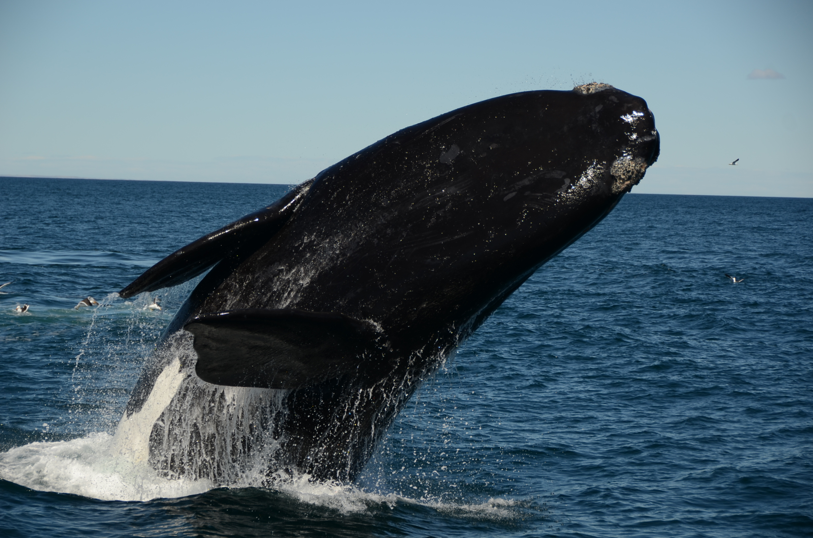
La temporada de avistajes de Ballenas embarcados comienza a mediados de Junio y se extiende hasta Diciembre, cuando alrededor de 2000 Ballenas francas del sur transitan las aguas del área de reproducción y cría Penísula Valdés. Puerto Pirámides es el punto de partida para embarcarse en esta increíble Aventura.
PINGUINERA PUNTA TOMBO
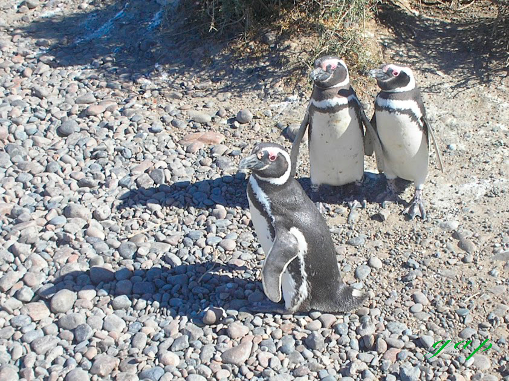
La Reserva Natural de Punta Tombo es un Área que protege las colonias de pingüinos de Magallanes, los que eligen la zona para realizar sus nidos, tener a sus pichones y criarlos hasta que puedan emigrar. La pingüinera es una franja costera de 3 km. de largo por 600 metros de ancho. La temporada se extiende desde Octubre a Marzo.
PENÍNSULA VALDÉS
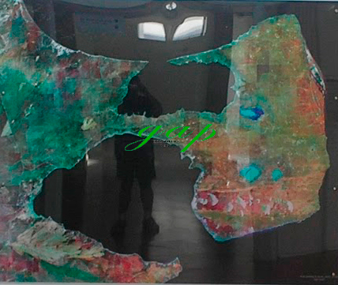
Es un accidente costero sobre el mar Argentino, en la provincia del Chubut, Argentina. Es Patrimonios de la Humanidad declarado por la Unesco. Contiene seis reservas naturales, y está considerada uno de los principales y más importantes destinos de avistamiento de ballenas en el planeta. Además se avistan orcas, toninas overas, pingüinos, elefantes marinos y gran variedad de aves, entre otros.
Elefantes Marinos
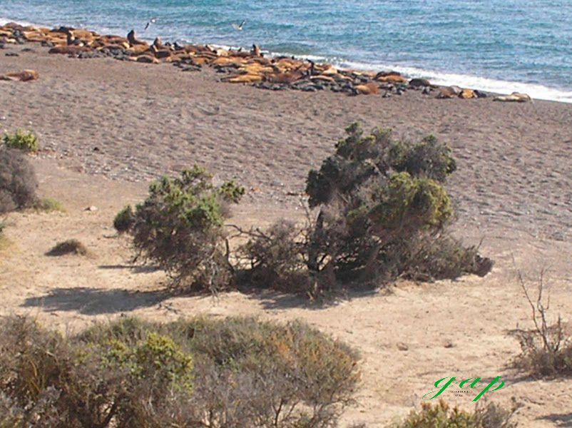
Estos mamíferos marinos se acercan a las costas a reproducir y mudar la piel. Concentra su actividad reproductiva, nacimientos y cópulas, durante los meses de septiembre y octubre, que es el momento del año en que podemos observar el mayor número de ejemplares en la playa de Punta Delgada y Caleta Valdés en Península Valdés y también se observan en Punta Ninfas, en el Golfo Nuevo.
Museo Paleontológico Egidio Feruglio
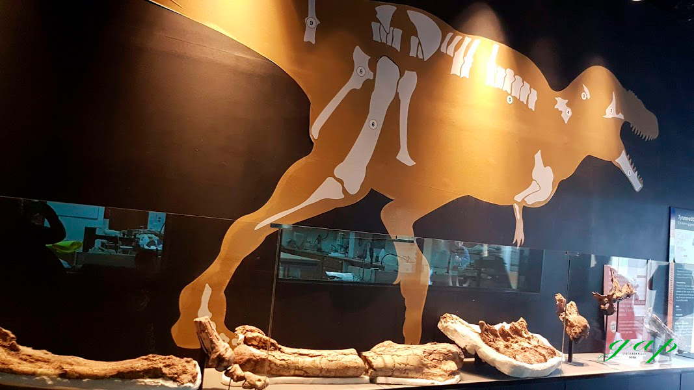
Ubicado en la ciudad de Trelew, se exhibe flora y fauna fósil de la Patagonia, pero además, representa el mayor referente de Sudamérica en su especialidad. El material está ordenado de acuerdo con un criterio científico que lleva al visitante a un viaje hacia el pasado del mar y la tierra. Uno de sus ejemplares es el dinosaurio más grande del mundo.
Ciudad de Gaiman
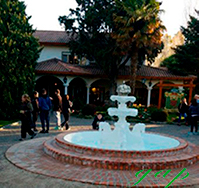
Gaiman es reconocida como símbolo de la colonia galesa del Chubut, pues predominan en su identidad rasgos galeses. El Té Galés es una costumbre familiar galesa. Forma parte de la cultura de Gaiman y los turistas lo encuentran para agasajarse en distintas "Casas de Té": el Té con su típica torta negra galesa, tarta de crema, torta de nuez, tarta de manzana, torta de chocolate con crema, y tartas con frutas, dulces y manteca regional, scones y pan casero.
OTROS SITIOS DE INTERÉS
LA CIUDAD
La ciudad de Puerto Madryn se encuentra frente al Golfo Nuevo, por lo tanto las playas son abundantes y según las características del terreno patagónico permiten que ninguna sea igual a la otra. El agua es azúl y cálida en todos lados, pero según la zona puede golpear las costas con más fuerza, estar rodeada por piedras, arena o hasta enormes acantilados.
LAS PLAYAS
Las playas del centro
están integradas por arena oscura y al caminarlas se puede apreciar el Muelle Luis Piedra Buena y bordear la ciudad hasta Punta Cuevas, entre otras actividades. Es un lugar especial para observar el atardecer y presenciar la llegada de la luna. Según en qué sector se encuentren, podrán reconocer algunos acantilados a lo lejos. Allí se puede practicar buceo entre otras actividades.
Ubicada a 13.5 kilómetros del centro, El Doradillo es una preciosa playa del norte. Repleta de pequeñas piedras, es un balneario muy popular durante el verano y un sector ideal para ver la temporada de ballenas, ya que puede hacerse el avistaje desde la playa.
Playa Paranáhacia el sur, camino a la Reserva Loberia de Punta Loma, hay un sinfín de costas para conocer, recorrer y hasta pasar un día entero conectado con la naturaleza. Es una de las más grandes y muy visitada gracias a su cercanía con la Baliza Acantilado.
AcantiladosEs una playa rodeada de acantilados, siendo una clara evidencia de otro tipo de relieve muy común en la zona. Desde allí se puede observar el hermoso paisaje desde una importante altura y permite conocer en detalle el suelo patagónico.
INVIERNO
se realizan excursiones para el avistaje de ballenas franca, delfines, toninas overas, pingüinos, elefantes marinos y aves entre otros.
VERANO
Las playas son muy concurridas, en donde además de baños de sol y agua se practican deportes náuticos como kayak, canotaje, windsurf, kitesurf y moto-esquí entre otros.
BAUTISMOS SUBMARINOS
Los golfos San José y Nuevo son visitados principalmente para realizar "bautismos submarinos". Puerto Madryn es denominada "Capital Nacional del Buceo". Posee aguas cristalinas y serenas, lo que permite una penetración de luz hasta los 70 m de profundidad.
MUELLE LUIS PIEDRABUENA
Por allí pasan cruceros que tienen como destino el sur de la Argentina. Es un hemoso paseo recorrer el muelle a pié desde donde puede apreciarse la ciudad desde otra perspectiva.
OTRAS
Los principales sitios de interés en la ciudad son el Museo municipal de Arte, el Museo provincial del Hombre y el Mar, el Ecocentro y el Museo del Desembarco. También se encuentra el centro comercial Portal de Madryn.
CIUDAD DE TRELEW
Trelew se encuentra en el valle inferior del río Chubut. Allí se encuentra el Museo Regional Pueblo de Luis, donde se muestran aspectos históricos de la región relacionados con la colonia galesa y los grupos mapuches y tehuelches. El Museo Paleontológico Egidio Feruglio conserva restos del patrimonio paleontológico de la Patagonia y es uno de los más importantes de América del Sur y donde parten paleontólogos hacia el interior provincial para hacer importantes hallazgos. El Observatorio Astronómico y Planetario.
CIUDAD DE RAWSON
Es la ciudad capital de la provincia del Chubut. Se encuentra ubicada en el valle inferior del río Chubut, a 7 km de la desembocadura del río en el océano Atlántico. En ese lugar se encuentra Puerto Rawson, de actividad netamente pesquera, donde se destaca la Flota amarilla, de barcos pesqueros que pescan mayormente merluzas y langostinos. Además, a 600 metros del puerto se encuentra Playa Unión, balneario sobre mar abierto que recibe a miles de turistas cada verano.
SEGUNDA PARADA: COMODORO RIVADAVIA
A 440 km de Puerto Madryn y atravesando un gran parque eólico, se encuentra la ciudad deComodoro Rivadavia,está ubicada al centro este de la Patagonia en el corazón de la zona hidrocarburífera del golfo San Jorge. Es una de las ciudades más importantes de la Patagonia argentina. Las ciudades más cercanas son: Caleta Olivia a 77 kilómetros y Colonia Sarmiento a 155 kilómetros.
Comodoro Rivadavia es un concentrador comercial, de transporte regional y un importante punto de exportación. Por medio de su puerto salen al mundo petróleo, productos industriales y agrícolas regionales.
La ciudad de Comodoro es famosa por su singular geografía, siendo una de las únicas ciudades del país ubicada al pie de un cerro y a orillas del mar. Se emplaza en la zona central de Cuenca San Jorge, que corresponde a un área de deposición marina, sector donde se encuentran abundantes restos fósiles marinos y en completa irregularidad de terreno, hallándose lomas de distintas prolongaciones, bajos, cañadones, llanuras y cerros por doquier.Todo esto da desniveles típicos de la ciudad y sus alrededores, siendo tan comunes que algunos barrios toman denominaciones como La Loma, Cerro Solo, Sismográfica.
La costa es de perfil accidentado, con más de 40 km, combina playas de arenas finas con las de canto rodado, protegidas por acantilados que llegan a tener alturas de hasta 60 metros que caen a pique sobre las mismas. Abundan radas, bahías y caletas, que en baja mar descubren amplias restingas.
La ciudad goza de una excelente infraestructura hotelera y gastronómica, además de lugares de esparcimiento y recreación: numerosas confiterías bailables, cines, teatro y casino, los comercios, los paseos culturales y los diferentes edificios históricos que expresan toda una tradición de progreso. Los museos, eventos y fiestas de la ciudad representan una importante muestra cultural, arqueológica, paleontológica y de la economía industrial de la ciudad.
Rada Tilly, situada a 15 km al sur del centro de Comodoro Rivadavia, sobre el océano Atlántico.
Ostenta ser el balneario más austral de América y uno de los más australes del mundo.Con una playa de arenas finas y suave pendiente de casi 4 kilómetros de extensión, la villa se luce en esta zona de la Patagonia. Con amplitudes de mareas que varían entre 4 y 6 metros, la bajamar descubre hasta 600 m de suelo firme apto para la práctica de deportes como tenis, fútbol, rugby, hockey, carrovelismo, deportes náuticos, ciclismo, trekking o simplemente contemplar el paisaje, realzado por el constante murmullo del mar.
Museo RegionalPropone viajar un instante al pasado de la región, recorriendo desde las primeras formas de vida hasta los antiguos habitantes de Patagonia, con importantes colecciones de restos arqueológicos; los ecosistemas marino y terrestre ofrecen una muestra fiel del entorno natural; siendo imperdible la sala de arte rupestre, representativa de la cueva de los felinos (ubicada en la meseta central de Santa Cruz). Se compone de tres salas divididas en temas de paleontología, historia prehispánica, fauna y flora regionales, con buenas maquetas y reproducciones de pinturas rupestres, junto a una interesante colección de fósiles.
Caminata por la costaneraImperdible de realizar una estupenda caminata por la costanera de Comodoro, donde se puede apreciar, no sólo la majestuosidad del azúl profundo del mar, sino también, gran cantidad de monumentos dedicados a la guerra por la recuperación de las Islas Malvinas, como así también una muestra de distintos armamentos utilizados en la misma.
TERCERA PARADA: RÍO GALLEGOS
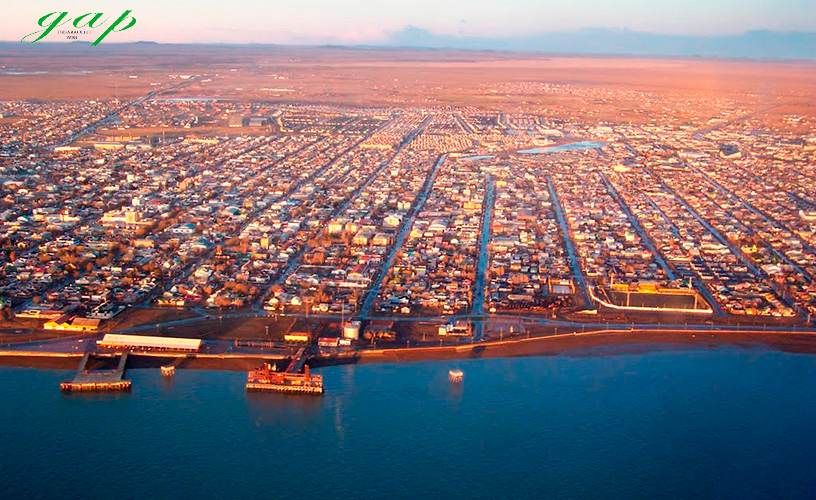
A 780 km de Comodoro Rivadavia, se encuentra la ciudad de Río Gallegos, en la provincia de Santa Cruz.
Durante este tramo, el Océano Atlántico acompaña el viaje, convirtiéndose una vista hipnótica.
Río Gallegos, capital de la provincia de Santa Cruz. Ubicada en la desembocadura del río Gallegos, y es el centro distribuidor para las actividades turísticas de la zona. La oferta turística de la ciudad está conformada por museos, monumentos histórico-culturales y circuitos urbanos; como así también un estuario que alberga miles de aves residentes y migratorias. Fuera del radio urbano puede optarse por estancias turísticas, un recorrido por el paisaje volcánico de la laguna Azul o una excursión a la Reserva Faunística Cabo Vírgenes, una de las mayores pingüineras de América del Sur que alberga, de octubre a abril, a más de 150000 pingüinos magallánicos.
Bosque Petrificado El Jaramillo. Antes de llegar a Río Gallegos, se puede hacer un desvío de la Ruta 3 hacia la derecha, tomando la ruta 49, para visitar este bosque.
Bosque petrificado de Jaramillo (Monumento Nacional de los Bosques Petrificados) situado a 310 km de Comodoro Rivadavia es el bosque más antiguo y posee los árboles fósiles más grandes del mundo (más de 70 mts de long. y 2 mtsde diámetro).Hace 150 millones de años el paisaje era muy diferente al actual.
Por ejemplo, la cordillera de los Andes no existía como tal y en su lugar se extendía el mar. La ubicación, más cercana al ecuador, fomentó un clima más cálido y húmedo. Hoy, restos de troncos de hasta tres metros de diámetro y más de treinta de largo son testimonio ineludible de ese pasado lejano.
En el lugar, que hoy es inhóspito para muchas especies, se desarrolló un gran y exuberante bosque de araucarias ancestrales (Araucaria miriabilis) junto con especies de pinos, helechos, cicas y benetitales semejantes a palmeras (hoy extintas). Como representantes de la fauna local actual se pueden observar, entre las aves, choiques, loicas y tucúqueres (un enorme búho); y entre los mamíferos más conspicuos guanacos, piches y zorros grises.
También es posible ver en el yacimiento; árboles fósiles de pié; o sea; fosilizados en el mismo lugar en que crecieron; hace mas de 150 millones de años. Son mayormente araucarias que contaban con mas de 1000 años de edad cuando comenzó su fosilización. También encontramos palmeras fósiles; que conformaban la flora de aquel período jurásico hace 150 millones de años. Llegar al bosque desde Comodoro es un paseo hacia el pasado motivado constantemente con la aparición de variada fauna patagónica (guanacos ñandues zorros maras etc.).
Cañadón Duraznillo: Protegido por la Fundación Vida Silvestre, se estableció allí una de las reservas mas importantes del mundo de lobos y elefantes marinos (más de 3.800 animales en un solo punto)
Ubicado en la Ría de Puerto Deseado, histórico puerto donde se origina la patagonia. Allí recalaron muchos navegantes como Magallanes, también piratas como Cavendish (que lo bautizó como «Port Desire» y cientificos como Darwin, quien recorre la ria hasta descubrir los famosos Miradores de Darwin.
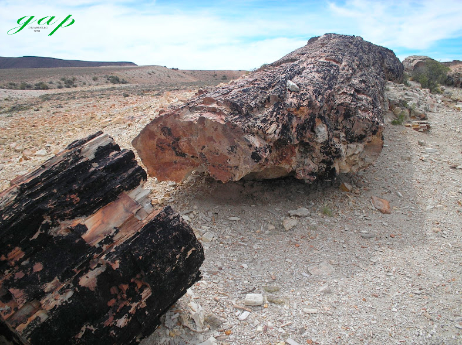
Bosque petrificado
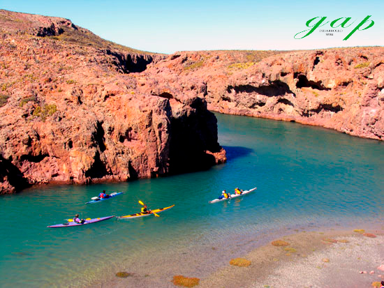
Ría Puerto Deseado
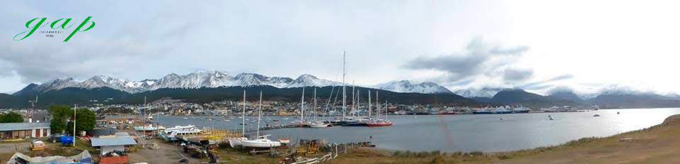
CUARTA PARADA: USHUAIA
Es la única ciudad Argentina ubicada al Oeste de la Cordillera de los Andes, en la Provincia de Tierra del Fuego, Antártida e Islas del Atlántico Sur, tambíen llamada la Ciudad del Fin del Mundo. La ciudad se ubica en la costa de la isla Grande de Tierra del Fuego que da a la bahía de Ushuaia en el canal Beagle, y está rodeada por la cadena montañosa del Martial. Además de ser un centro administrativo, es un nodo industrial, portuario y turístico.
En el trayecto desde Río Gallegos a Ushuaia, es necesario cruzar en ferry el Estrecho de Magallanes y realizar 2 trámites de Aduana, uno para ingresar a territorio chileno, recorrer un tramo del viaje y luego otra Aduana, para retornar el camino por Argentina, hacia Ushuaia. Ésto ocasiona demoras, dependiendo del tráfico y los horarios, por lo que algunos recorridos hacen una parada en Río Grande, que es una ciudad importante de Tierra del Fuego,antes de viajar hacia Ushuaía.
QUINTA PARADA: EL CALAFATE
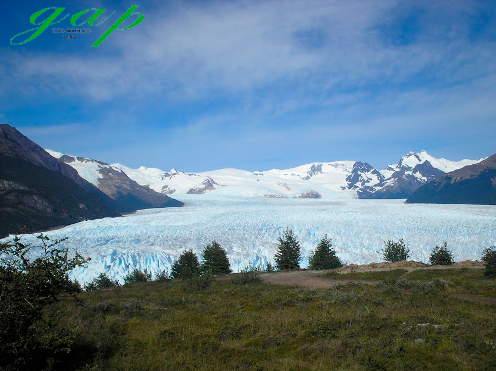
Ciudad del Parque Nacional Los Glaciares
A 880 km de Ushuaia, desandando el camino hacia el continente y dirigiéndose hacia el Oeste, se encuentra esta hermosa ciudad El Calafate, cuyo principal atractivo es el Glaciar Perito Moreno,único en el mundo ya que puede verse sin necesidad de embarcarse.
SEXTA PARADA: EL CHALTEN
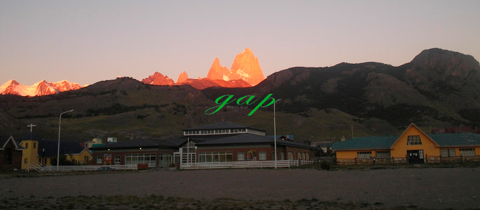
A 213 km de El Calafate, se encuentra la Ciudad de El chalten, el recorrido es bordeando el lago Argentino, lo cual implica un hermoso paisaje. El Chalten, puede visitarse haciendo una excursión de todo el día desde El Calafate o bien pernoctando una noche allí, para disfrutar de las atracciones del lugar.
EL REGRESO
El regreso puede realizarse de 3 maneras diferentes:
Haciendo el recorrido inverso, sin pasar por Ushuaia y aprovechando la vuelta para visitar otras ciudades que no se visitaron en el camino de ida. Como por ejemplo: Cabo Vírgenes, Puerto Santa Cruz, Puerto San Julián, Puerto Deseado, Caleta Olivia,entre otras.
Dirigirse al Norte para visitar la ciudad de Los Antigüos y luego al Este para recorrer La Caverna del Río Pinturas, donde se encuentra la Cueva de las Manos. Desde allí dirigirse a Puerto Madryn para luego retornar a Buenos Aires. Este recorrido lo veremos a partir de la séptima parada.
Algunos paquetes turísticos ofrecen este viaje realizando la ida en bus y el regreso en Avión.
SÉPTIMA PARADA: LOS ANTIGUOS
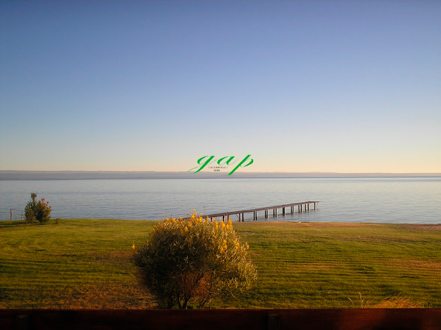
A 700 km de El Calafate, se encuentra la ciudad de Los Antigüos, en el Noroeste de la provincia de Santa Cruz, en la costa sur del Lago Buenos Aires, y a orillas del río Los Antiguos. Pese a que el clima de la zona es frío, el área de Los Antiguos tiene un clima benigno ya que se encuentra a una altitud baja, en una vertiente asoleada y con el influjo moderador de los vientos del cercano Océano Pacífico. Esto permite que en Los Antiguos se practique una agricultura intensiva, especialmente de frutos agrios: cerezas, frutillas, frambuesas, manzanas; la cereza es la que más se destaca, por tal razón Los Antiguos ha sido declarada la Capital Nacional de la Cereza celebrándose para ello una festividad durante cada enero (verano del Sur) con jineteadas, recitales folclóricos, fuegos artificiales y una fiesta de la cereza. Esta época coincide con las cosechas, embelleciendo la zona por las flores de las cerezas y los rojos y amarillos de los campos de tulipanes.
Los Antiguos es naturalmente un centro turístico todo el año (durante los prolongados y nevados inviernos la zona es buena para los deportes invernales).Durante todo el año la avenida 11 de julio (la principal de esta pequeña ciudad) tiene el atractivo de una feria artesanal, esta avenida acerca a las escalinatas del edificio de la municipalidad en un Centro Cívico, desde tales escalinatas se puede marchar hacia el sudoeste hasta llegar al mirador panorámico Uendeunk, avanzando dos kilómetros más al sur se accede al mirador del Jeinimeni desde el cual se observan las coloridas 420 hectáreas que han constituido el núcleo de la zona chacarera con sus cultivos floridos, luego se encuentra el siempre nevado cerro Castillo tras ésto un camino de montaña que se inicia a solo 200 msnm trepa los faldeos andinos cubiertos de coníferas y fagáceas hasta tener etapa en la ladera del Monte Zeballos ya a 1 500 msnm, luego se penetra en un espeso bosque de lengas y ñires de 8000 hectáreas que culmina en un páramo volcánico llamado El Portezuelo, desde allí se puede, punto más alto de este recorrido, apreciar en toda su magnitud el gran lago Buenos Aires/Carrera con sus aguas azules y sus ocasionales témpanos y continuar viaje al recóndito Lago Posadas. En esta localidad pueden visitarse varias chacras y cosechar cerezas, hay un bello Bar Lácteo en el centro de la ciudad sobre la calle San Martín. En el 2021, se inauguró la Reserva Natural Urbana "Laguna de los Juncos".
OCTAVA PARADA: CUEVA DE LAS MANOS
A 180 km al Sureste de Los Antiguos, se encuentra laCueva de las Manos.Es un sitio arqueológico con pinturas rupestres, ubicado en el profundo cañón del río Pinturas, en la Provincia de Santa Cruz. La cueva tiene 20 m de profundidad, 10 m de alto y 15 m de ancho, y es de difícil acceso.
Su interés radica en la belleza de las pinturas rupestres, así como en su gran antigüedad, las inscripciones más antiguas están fechadas el año 7350 A. C.
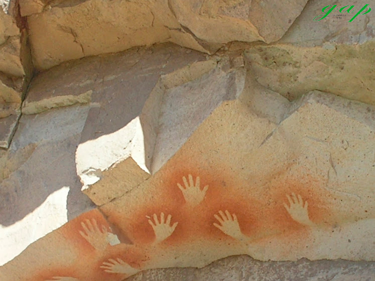
Es una de las expresiones artísticas más antiguas de los pueblos sudamericanos. Fue designada Monumento Histórico Nacional en 1993 y declarada Patrimonio de la Humanidad por la Unesco en 1999.
Si bien en su interior también se hallaron vestigios de materiales líticos, fogones con restos, huesos y pieles de animales que eran la base de la subsistencia de los cazadores-recolectores, allí se destaca la complejidad del arte paleolítico, que permite entender cómo vivieron aquellas sociedades del pasado.
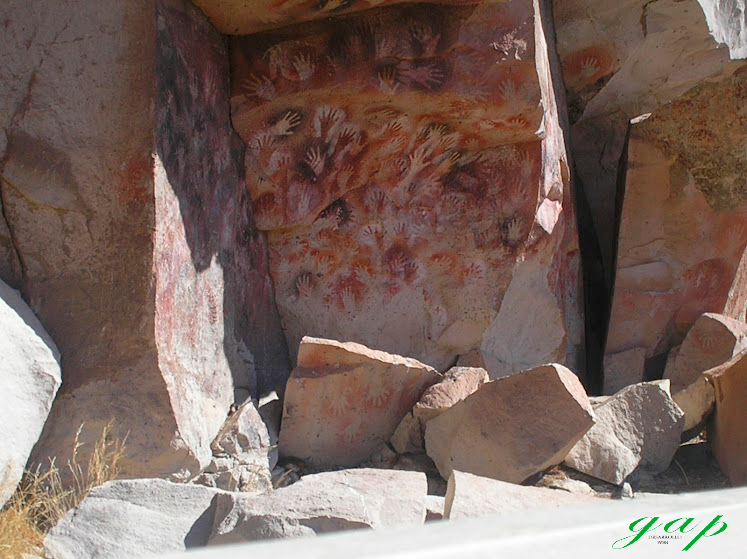
La Cueva de las Manos pertenece a una serie de sitios arqueológicos americanos, como Monte Verde (Chile), Pedra Furada(Brasil) y Piedra Museo (Argentina), entre otros, que están cuestionando la tradicional teoría del poblamiento tardío de América, para sostener una teoría del poblamiento temprano (pre-Clovis).
Otro asentamiento cercano fue ubicado en Los Toldos, también en la provincia de Santa Cruz, con restos que datan de hace 12 500 años AP (10 500 A. C.).
TRAYECTO FINAL
Finalizando este extraordinario viaje, se emprende el retorno, dirigiéndose al Este. Se puede pernoctar en Comodoro Rivadavia o directamente en Puerto Madryn, para luego emprender desde allí la vuelta a Buenos Aires.